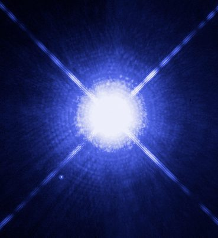

Tipos de estrellas y sus colores
Azules, blancas, amarillas, naranjas y rojas: el color de una estrella revela su temperatura, y su brillo, su tamaño y su edad.


A simple vista casi todas las estrellas parecen puntos blancos, pero si te fijas bien verás que Betelgeuse es anaranjada y Rigel, en la misma constelación de Orión, es azulada. El color de una estrella es como un termómetro.
El color indica la temperatura
Al contrario que en los grifos, en las estrellas el azul es lo más caliente y el rojo, lo más frío. Los astrónomos las clasifican con las letras O, B, A, F, G, K y M, de más caliente a más fría. Una forma clásica de recordarlas en inglés es «Oh Be A Fine Girl/Guy, Kiss Me».
| Tipo | Color | Temperatura de la superficie | Ejemplo |
|---|---|---|---|
| O | Azul | Más de 30.000 °C | Estrellas de Orión (Mintaka) |
| B | Azul blanquecino | 10.000 a 30.000 °C | Rigel, Spica |
| A | Blanco | 7.500 a 10.000 °C | Sirio, Vega |
| F | Blanco amarillento | 6.000 a 7.500 °C | Proción, la Polar |
| G | Amarillo | 5.200 a 6.000 °C | El Sol, Alfa Centauri A |
| K | Naranja | 3.700 a 5.200 °C | Arturo, Aldebarán |
| M | Rojo | Menos de 3.700 °C | Betelgeuse, Próxima Centauri |
Enanas, gigantes y supergigantes
Además del color, las estrellas se distinguen por su tamaño y brillo:
- Enanas rojas: las más pequeñas y abundantes. Unas tres de cada cuatro estrellas de la galaxia son enanas rojas, aunque no se ve ninguna a simple vista.
- Estrellas como el Sol: de tamaño medio, en la mitad de su vida.
- Gigantes rojas: estrellas viejas que se han hinchado, como Arturo o Aldebarán.
- Supergigantes: las mayores de todas. Betelgeuse es tan grande que, puesta en lugar del Sol, llegaría casi hasta Júpiter.
- Enanas blancas: los núcleos apagados de estrellas muertas, como la compañera de Sirio.


El diagrama de Hertzsprung-Russell
A principios del siglo XX, el danés Ejnar Hertzsprung y el estadounidense Henry Norris Russell tuvieron la misma idea: dibujar las estrellas en un gráfico según su temperatura y su brillo real. Para sorpresa de todos, no aparecían al azar, sino agrupadas en franjas. La mayoría formaba una diagonal, la secuencia principal, y las gigantes y las enanas blancas ocupaban zonas propias. Ese diagrama es, todavía hoy, la herramienta básica para entender la vida de las estrellas.
Estrellas acompañadas
Más de la mitad de las estrellas parecidas al Sol tienen al menos una compañera. Alfa Centauri, el sistema más cercano, es triple: dos estrellas como el Sol que giran juntas y la pequeña Próxima Centauri. Otras forman cúmulos, como las Pléyades, grupos de cientos de estrellas nacidas a la vez de la misma nube.
El brillo: magnitudes
Los astrónomos miden el brillo con la magnitud, una escala que heredamos del griego Hiparco y que va al revés: cuanto menor es el número, más brillante es la estrella. Las más brillantes tienen magnitud 0 o negativa (Sirio, −1,46) y a simple vista, desde un cielo oscuro, se ven hasta la magnitud 6. Una diferencia de 5 magnitudes equivale a 100 veces más brillo.
Vídeos para entenderlo mejor
- ¿De qué color son las estrellas? | MITOS ESPACIALES [ V ]El Robot de Platón · 975 mil visualizaciones
- Tipos de estrellas en el Universo y el Sol vida y evoluciónAstronomiaweb · 214 mil visualizaciones
Los vídeos son de YouTube y de sus autores. Se cargan solo al pulsar sobre ellos. Ver todos los vídeos →